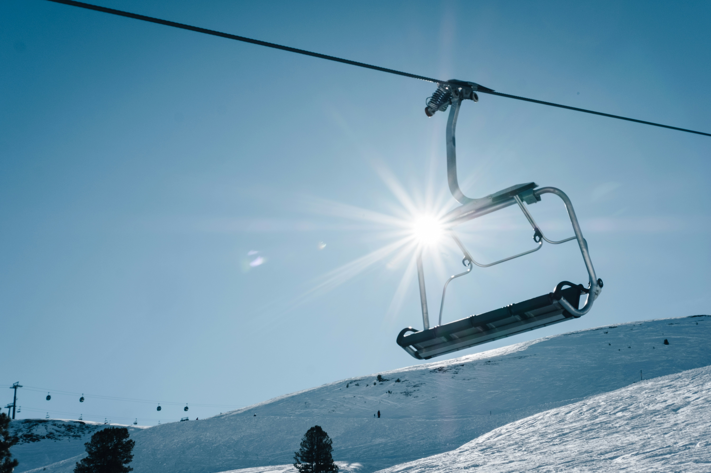
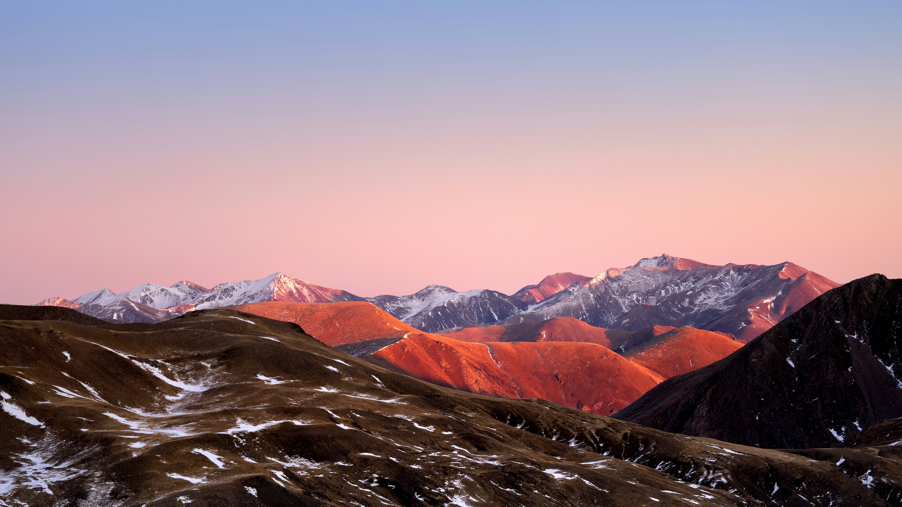
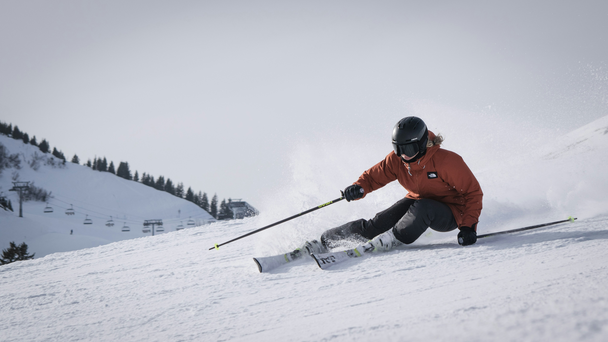
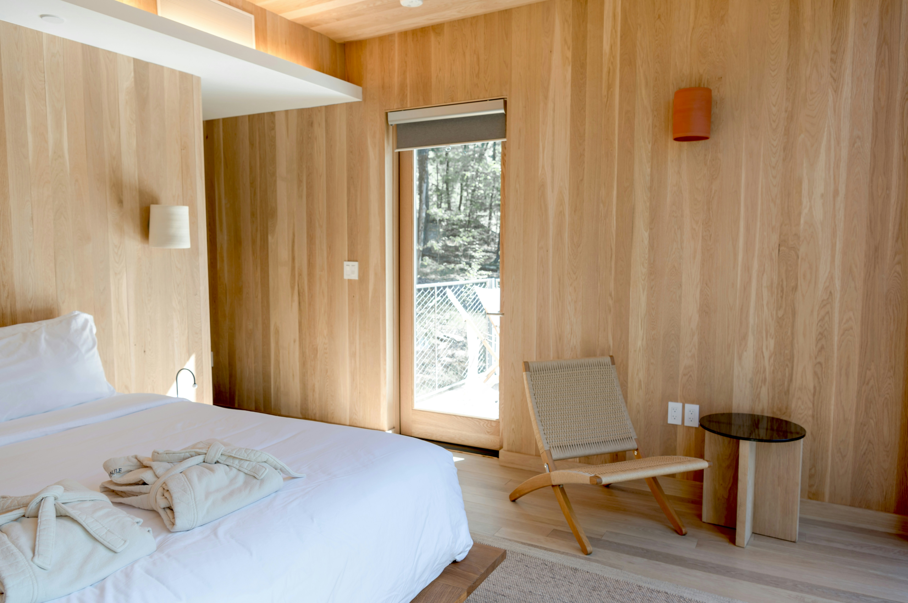
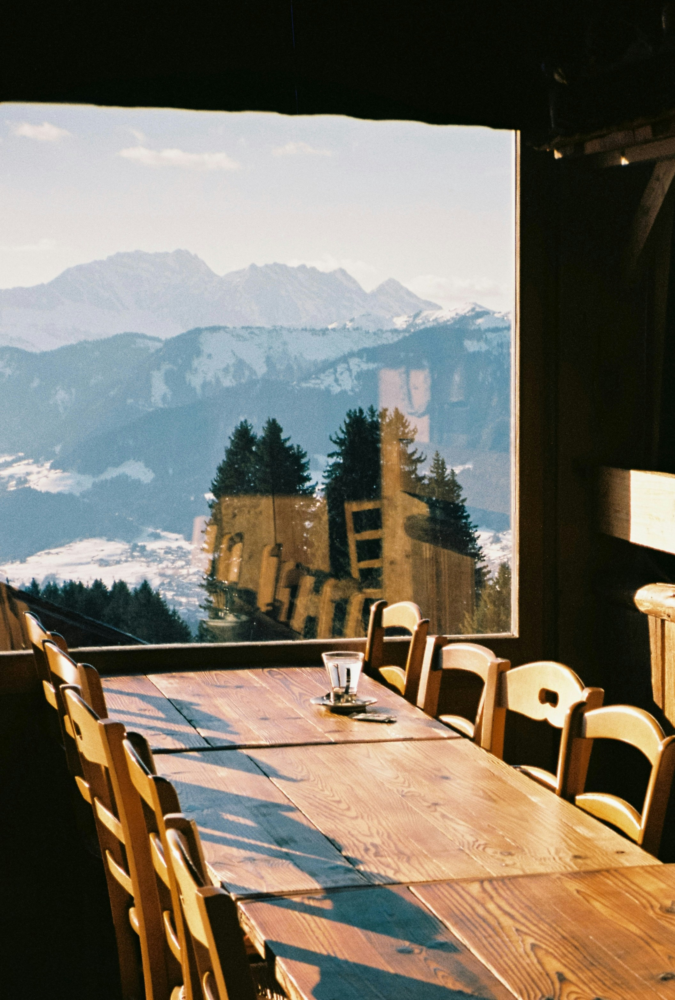
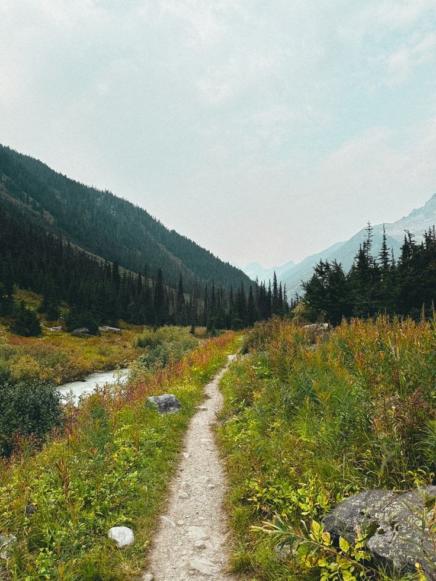
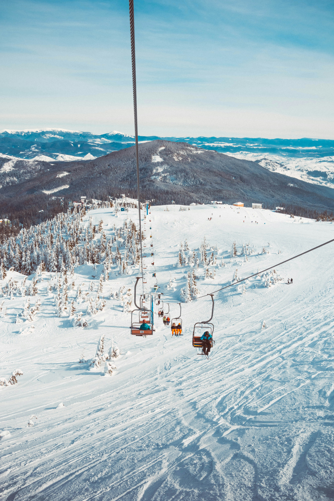

Apertura de temporada
La estación de Cerler da comienzo a la temporada con nuevas pistas y mejoras
Leer más
Estación de esquí y destino de montaña
Cerler es uno de los destinos más conocidos de los Pirineos aragoneses, famoso por sus pistas de esquí y su entorno natural impresionante. Rodeado de montañas altas y valles verdes, ofrece paisajes que enamoran a todo tipo de visitantes.
El pueblo combina la tranquilidad de la montaña con actividades al aire libre, desde esquí en invierno hasta senderismo y rutas en bicicleta en verano. Sus calles y alojamientos conservan el encanto típico de los Pirineos, con arquitectura tradicional y gastronomía local.
Además de disfrutar de la nieve o del paisaje, los visitantes pueden descubrir pequeños bares y restaurantes donde degustar platos típicos de Aragón, así como conocer la cultura y tradiciones de la zona. Cerler es ideal tanto para quienes buscan aventura como para quienes buscan relajarse rodeados de naturaleza.

Qué hacer
Dónde dormir
Dónde comer
La estación de Cerler da comienzo a la temporada con nuevas pistas y mejoras
Leer más
Se han señalizado nuevos caminos para disfrutar del valle en verano.
Leer más
Descubre las actividades culturales y deportivas programadas este mes.
Leer másLos miradores de Cerler se han convertido en uno de los grandes atractivos de la zona, especialmente al atardecer
Leer másEncuentra Cerler en el mapa y planifica tu viaje